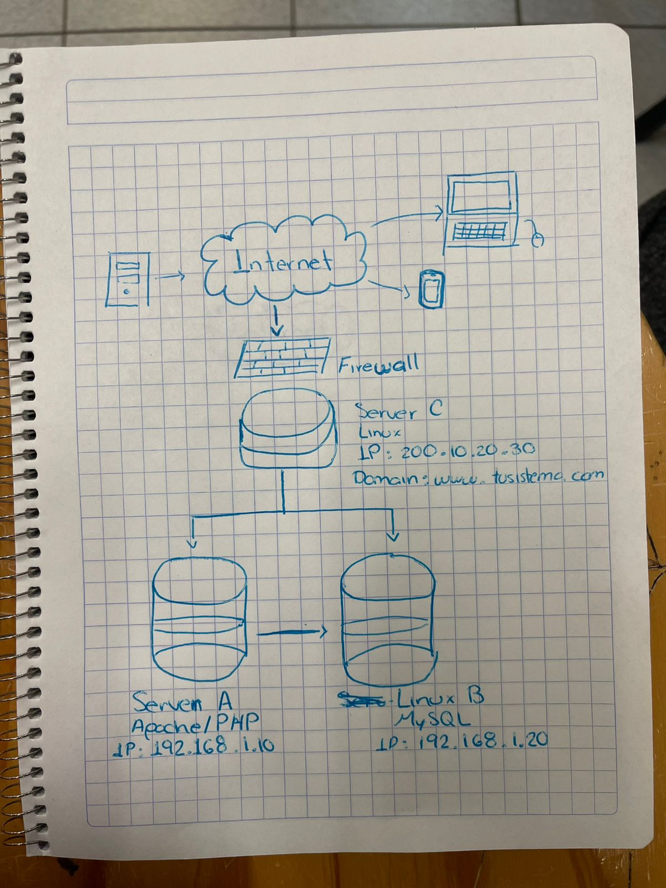
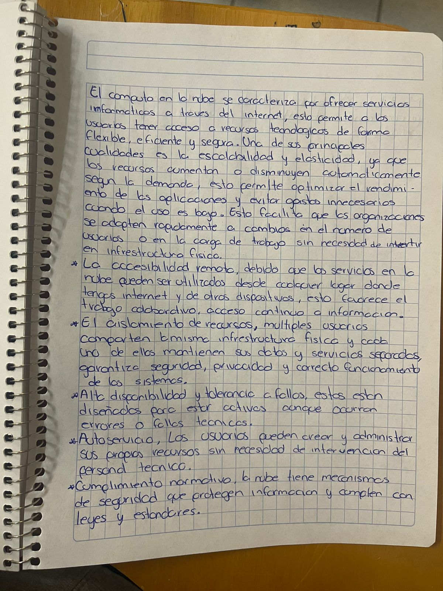
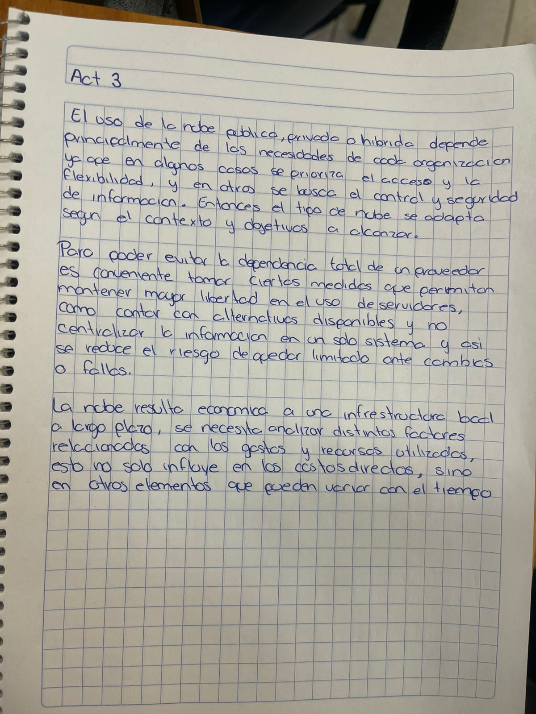
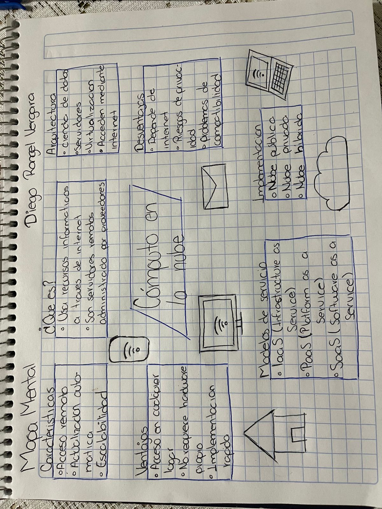

Descripcion: Un dibujo hecho a mano alzada que muestre los componentes básicos de una red local de computadoras.
Fecha: 29 Enero 2026
Aprendizaje: Comprendi los componentes de una red y como interactuan entre si.
Reflexion: Esta actividad me ayudo a entender como se comunican los dispositivos y su importancia en la nube.

Descripcion: Hacer una síntesis que incluya los siguientes puntos: Escalabilidad y elasticidad, Accesibilidad remota, Aislamiento de recursos, Alta disponibilidad y tolerancia fallos, Autoservicio, Cumplimiento normativo, Movilidad y flexibilidad.
Fecha: 4 Febrero 2026
Aprendizaje: Identifique conceptos como de los temas tratados.
Reflexion: Me ayudo a entender como la nube optimiza recursos.

Descripcion: Entregar en un archivo tipo PDF que contenga una fotografía de una cuartilla escrita a mano alzada sobre Ventajas, Desventajas y Riesgos del Cómputo en la Nube
Fecha: 5 Febrero 2026
Aprendizaje: Comprendi tanto ventajas como riesgos.
Reflexion: Me hizo reflexionar sobre la seguridad digital.

Descripcion: Dibuje un mapa mental que represente la información que tiene sobre lo que es cómputo en la nube.
Fecha: 9 Febrero 2026
Aprendizaje: Organice mejor la informacion sobre lo que es computo en la nube.
Reflexion: Me ayudo a visualizar los conceptos de forma clara.
